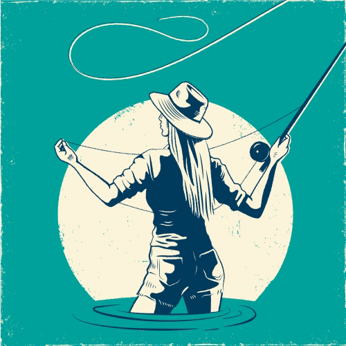

Visit Sacred Waters Brewing Co.'s Website
Heritage built in the wild. As Montanans we come from families where our love of the outdoors often begins with our parents. They drag us outside, hand us a fly rod or strap on our hiking boots, or skis, put us on a horse or mountain bike and say “this is amazing, you’re going to love this!”
Our brewery is a celebration of that heritage which has been passed on to us and that we’re passing on to our children. A heritage we can all relate to in Montana. It’s a reflection of everyone’s special place outside, everyone’s Sacred Waters.
When our founder (Jordan) lost her mother to cancer, she decided to establish Sacred Waters Brewing Company as a way to keep celebrating her mom’s love of wild places and people
Buy A Physical MT Brewery Passport Today!
Tap the Map to Go Back